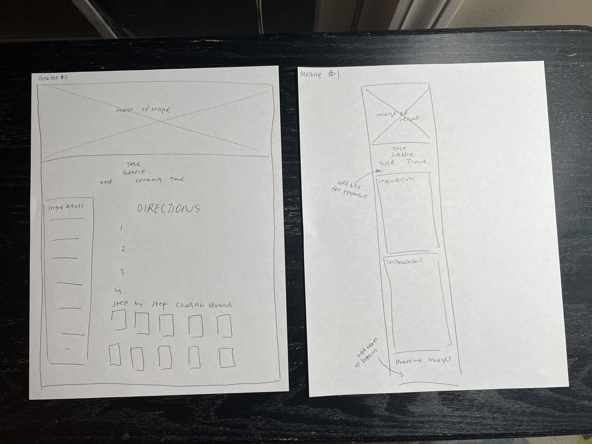
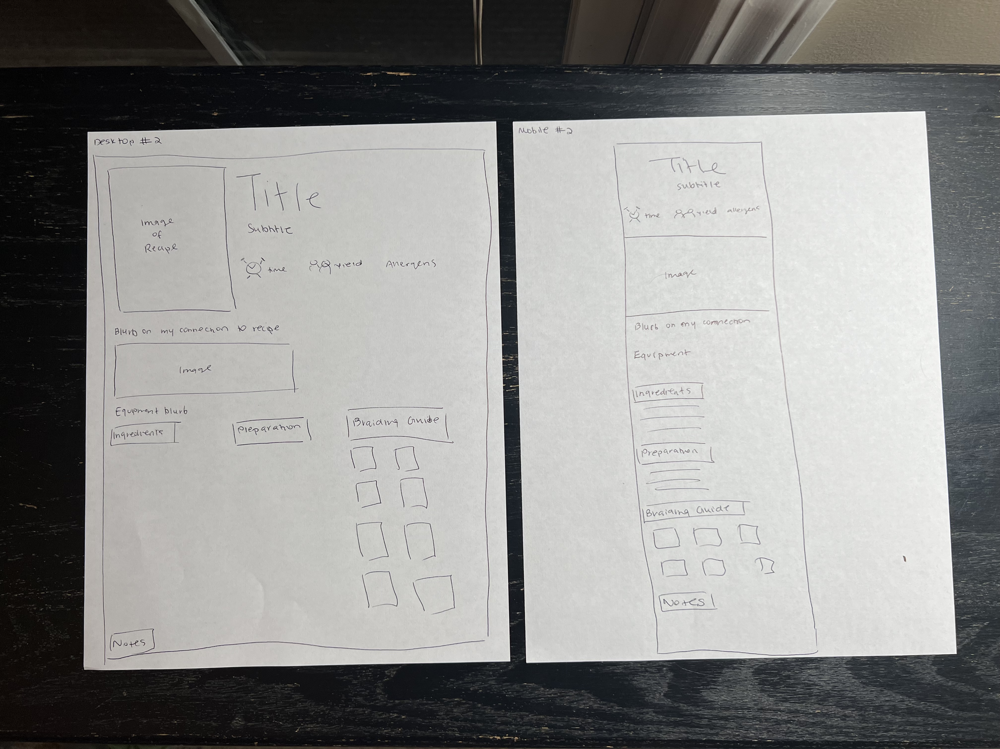
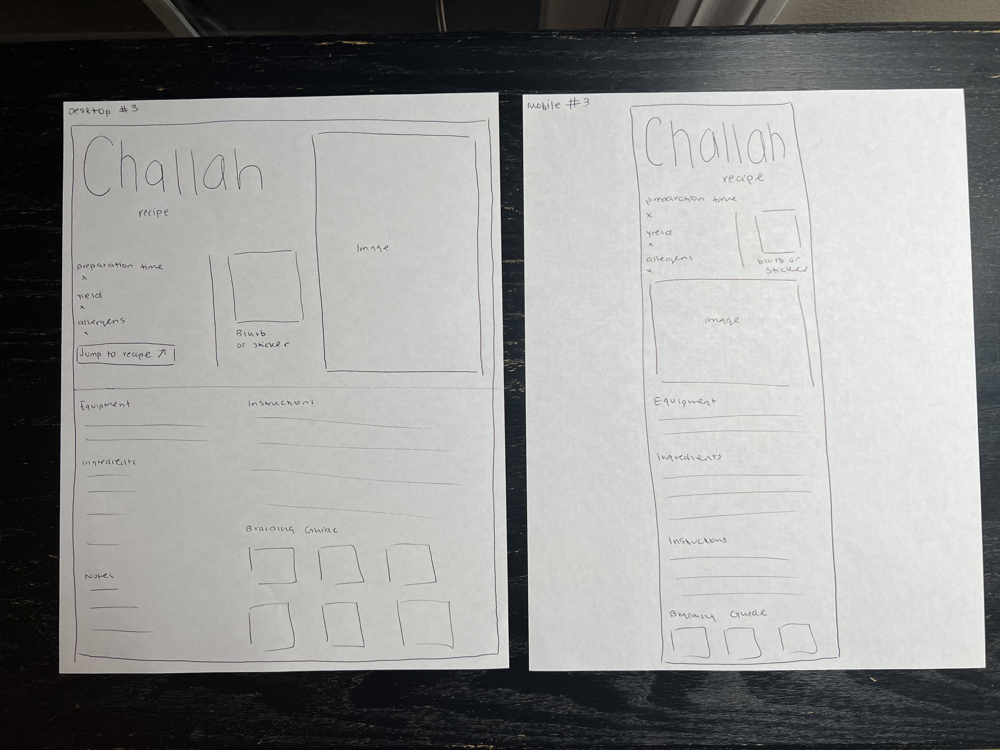

Low Fidelity Prototypes
Prototype 1: Desktop+Mobile
For this prototype, I opted for a two column layout for the ingredients and directions, and I also made the image the entire header to put more emphasis on what the final product would look like.

Prototype 2: Desktop+Mobile
For this prototype, I tried a 3 column layout for the details of the recipe along with using small icons to indicate time, yield, and allergens. I was thinking of adding a blurb on my connection to the recipe for this one.

Prototype 3: Desktop+Mobile
For this prototype, I tried to give the recipe title the most emphasis, and also use scale in type to highlight the important fields. I also included a jump to recipe button that would make the page scroll upon being clicked.
